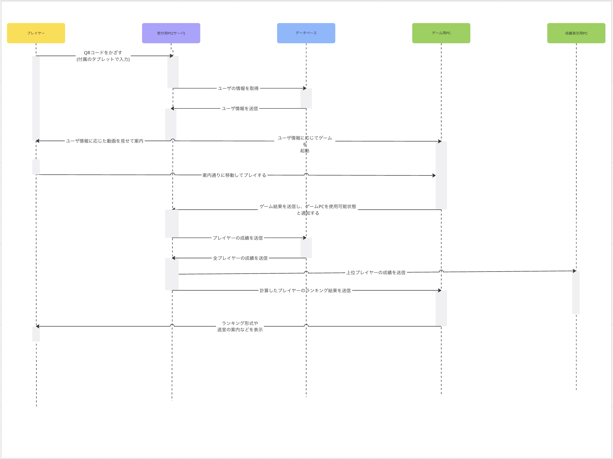

2025早稲田大学所沢キャンパス祭で開催する予定のデジタル×リアル融合型脱出ゲームです。昨年度に比べて、人力でやっていた部分を全てコーディングで自動化し、学祭感を減らし洗練された雰囲気を目指しています。加えてゲーム終了後の成績表示機能、入り口のモニターでの上位ランキング機能、QRコードによるプレイヤー識別機能など、大好評だった去年から大幅な進化を予定しています。
URL
担当
全て(動画制作・画像制作・コンセプト・問題作成・設計・コーディング・周辺機器の設定と管理・保守管理
作品の背景
昨年度の仮面遊戯が大好評だったので、それを大幅パワーアップさせた最新版を作成することになった。西武とコラボで行う前月祭でも所沢キャンパス祭実行委員を代表してこの作品を発表することになっている。去年のほぼPCだったところからPCをメインとしながらリアルとも融合した脱出ゲームを作成する。
一言
全国の大学の学祭の中でも、かなりハイレベルな部類だと自負していて、個人で制作してる範囲なら最高峰だと言えます。10/19に開催されるのでぜひ遊びに来てください。